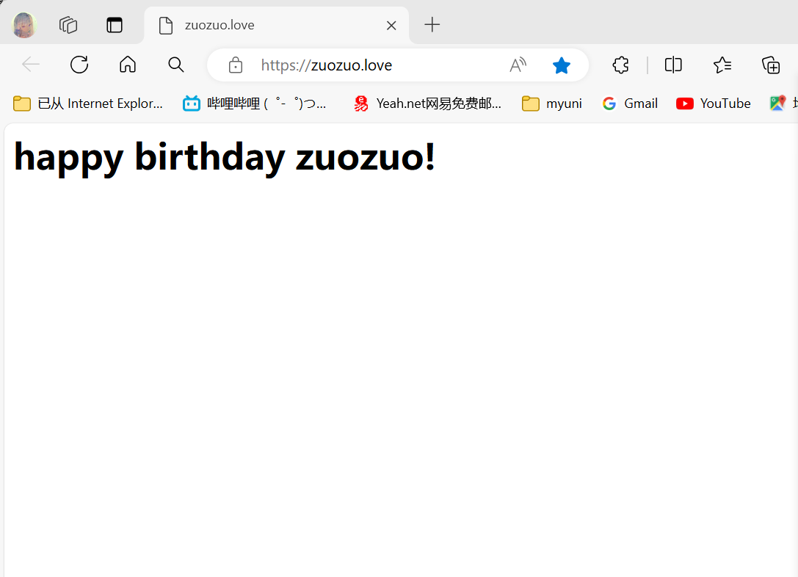
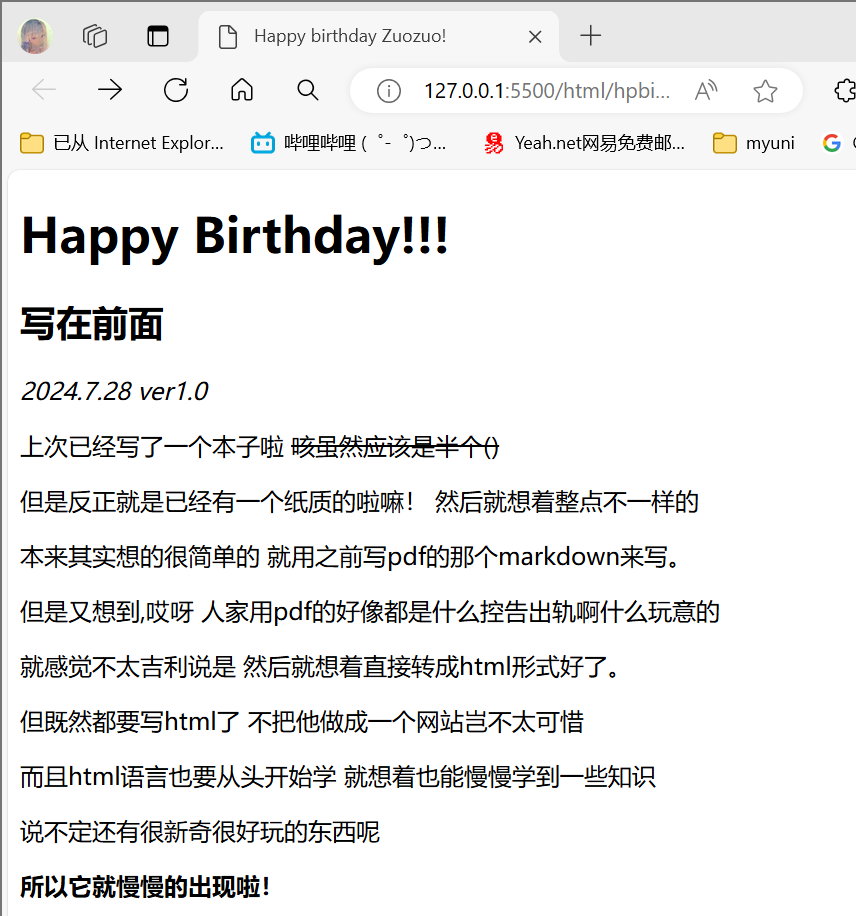
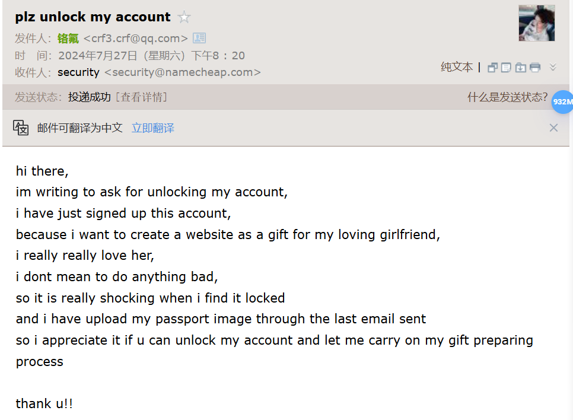

2024.7.27 ver1.0
上次已经写了一个本子啦 咳虽然应该是半个()
但是反正就是已经有一个纸质的啦嘛！ 然后就想着整点不一样的
本来其实想的很简单的 就用之前写pdf的那个markdown来写。
但是又想到,哎呀 人家用pdf的好像都是什么控告出轨啊什么玩意的
就感觉不太吉利说是 然后就想着直接转成html形式好了。
但既然都要写html了 不把他做成一个网站岂不太可惜
而且html语言也要从头开始学 就想着也能慢慢学到一些知识
说不定还有很新奇很好玩的东西呢
所以它就慢慢的出现啦！
这个赛博本子就用来记录从离你生日还有100天到生日那天的一些想法
大概就是看到什么想给你当礼物的东西就写下来
再写一点某些时刻突然产生的一些想法
尽力学一点html把这个网站优化的好看一点
总之会把自己所有的准备都记录下来！
希望不会过于唠叨，让你看着太麻烦
你能看到的时候应该要过生日了吧 嘿嘿
生日快乐呀宝宝！
愿你每天幸福快乐，无忧无虑
遇到不顺心的事情，记得有我在
无论怎样我们都可以度过的！
我爱你！
2024.7.27 101天
为什么要从101天开始，哈哈其实我也不知道，可能因为p吧（bushi
其实就是一开始想着要提前先学一下吧，然后先开始了
结果发现这一天干了好多事情！
那就写进来吧就写进来了
先就是想了一下该怎么建一个你能输入一个网址就能看到的网站
因为吃鸡哥之前做过类似的东西，就想着问问他
结果他说过了太久了找不着视频了，我就想着自己搜搜了
一开始是在b站找了一个教程，然后就教租服务器啊什么的
但是我又觉得很麻烦，而且他都用了一堆我有点看不起的模板插件啊什么的
还有广告，就很烦人
我又找了找，发现有一个搬运youtube的视频，用github page做的
刚学的下划线没地方用我用一下 嘻嘻
github我熟啊上课要求用呢，然后就很容易上手了，还很成功
https://crfrex.github.io/hpbrhtml
没跟zuozuolove域名链接的时候就长这个样子
不是很好看嘛，正好那个教程也教了，我就想着买一个域名链接一下子。
然后就开始照着教程上域名网站买域名
就各种各样的域名后缀还挺多的，我就搁那挑呢
吃鸡哥突然跟我说有.love后缀，我就觉得非常不错啊然后速速拿下了
其实还挺便宜的，一年十几块，然后吃鸡哥看的国内卖的一年三十几块
便宜好多，我真厉害哈哈
照着教程很顺利的就做好啦，忍不住给朋友们炫耀了一下子

要你看到还要挺久的呢，有一点遗憾
但总归这个东西是给你的嘻嘻，所以也还好啦你总会看到的！
总而言之今天还是很顺利的，不错不错
就是这个小网站看起来太简陋啦希望以后会慢慢好起来吧！
附带一个现在的样子：

爱你！
2024.7·28 100天
我就知道！不可能有这么顺利的呜呜:(
本来昨晚上还好好的，然后今天突然就给我退款了
我就感觉大事不妙啊，然后就去域名网站登陆看看
结果账号就被锁了，发邮件给我让我解封
啊啊啊好烦啊，就按照它提示的做
提交身份证照片人家还不认，可能因为是外国网站吧
然后我就翻箱倒柜翻出来护照，然后拍了照片提交
无敌了希望明天可以好起来
但是网页该写还是可以写的就是没办法及时更新了说是
被这个事情整的今天也没写什么东西
祈祷祈祷一定要好！！
2024.7·29 99天
哈哈！解封了！
我昨晚还额外给那个邮箱发了个求情的邮件
就说什么给我女朋友准备礼物啊啥的希望一定要好
哈哈你别说还挺管用的
今天就解封了，然后我就赶紧把域名又重新买了一遍
然后又走了一遍流程，这次应该就不会再不好了！
希望吧

然后讲一下正题！
礼物现在就想是不是有一点点早呢你说
但是现在刷到一些东西，觉得适合给你当礼物的我就已经开始不自觉地点收藏了
到时候装一个超级大的礼物盒子，然后让你像寻宝一样慢慢拆吧
但是应该也有很多可能后来会由于各种原因放弃吧，感觉有点可惜
所以决定在后面列一个礼物清单，嘿嘿所有的想法都列进去，送不送再说
到时候你有觉得不错但是我又没送的，你指出来我以后给你嘻嘻
爱你！
2024.7·30 98天
先完善了一下礼物清单，嘻嘻感觉有好多好多东西都想送给你，但是一下子又没法全想起来呢
先写这些然后想起来再继续整点
然后今天不是出来学习啦嘛，就看了一些html的课，结果好像对我的优化作用不是很大。
但是也多少学到一点知识，嘻嘻
给你展示一下嗷
啊啊啊啊呜呜呜呜呜呜世界上怎么会有姐姐宝宝这么温柔的人！！！！
本来不想视频就是我的问题，你还一点都不生气，然后一点点的鼓励我，还疯狂夸夸
呜呜呜呜真的要感动哭了你也太好了呜呜呜呜呜呜
好爱你！！！！！！
P.S. 我这个编辑器有代码自动补全功能，然后我在这列礼物列表，他也给我自动补全呢
他让我给你送一套helloKitty餐具，真无敌了笑死我了